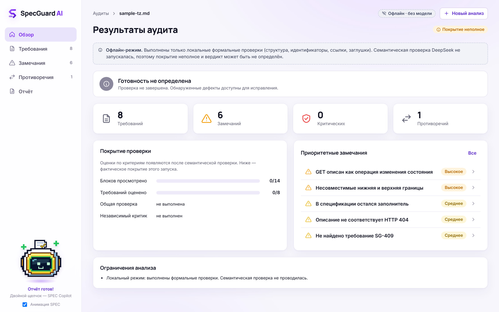
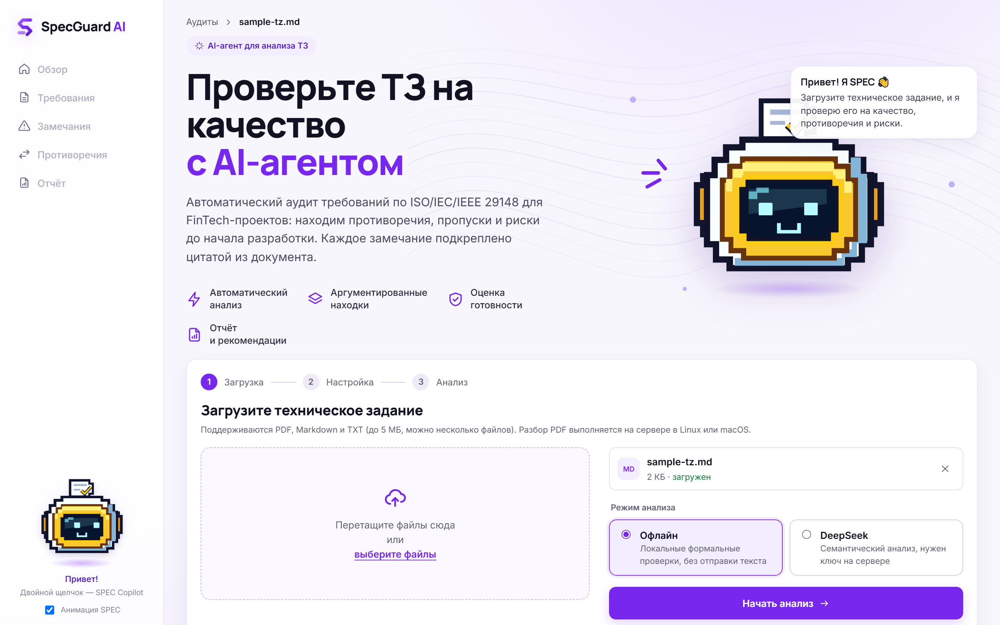
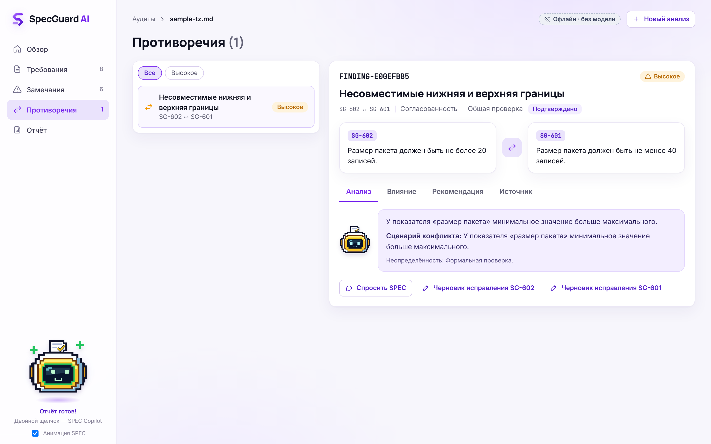
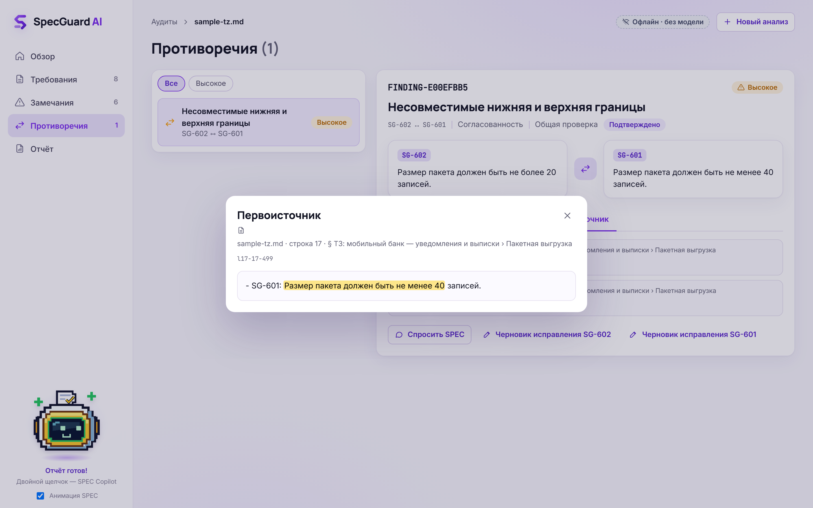
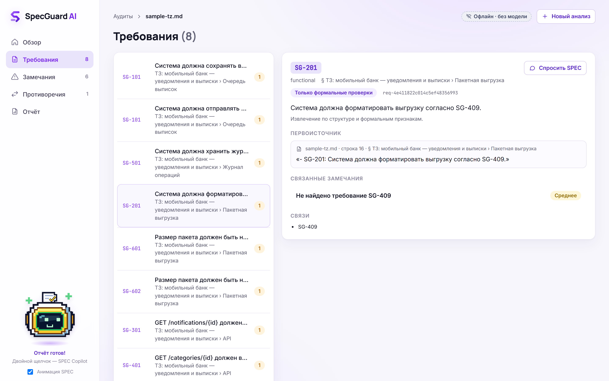
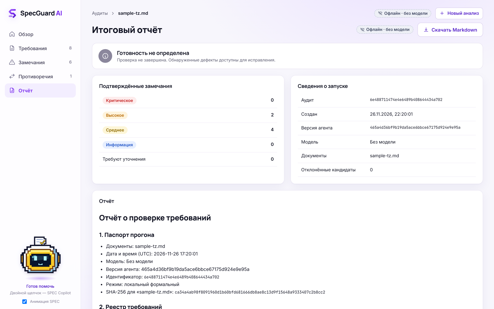
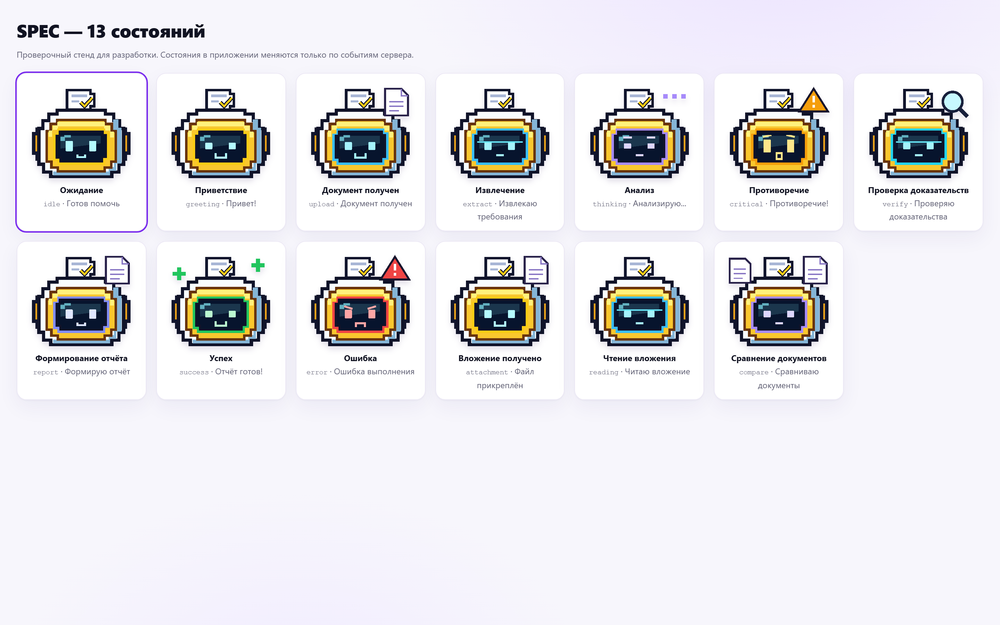

Находит противоречия, пропуски и риски в технических заданиях до начала разработки — и подкрепляет каждое замечание цитатой из документа.
ISO/IEC/IEEE 29148DeepSeekРусский отчёт
SpecGuard AI
Проблема
Ошибка в ТЗ дешевле всего — до первой строки кода
В банке требования связывают продукт, комплаенс, API и тестирование. Дефект формулировки уходит дальше по цепочке и всплывает там, где его исправлять дороже.
Противоречия
Два раздела задают несовместимые правила: лимит, частоту уведомлений, коды ответа API.
Непроверяемость
«Быстро», «удобно», «TBD» — по такой формулировке нельзя написать приёмочный тест.
Пропуски
Нет ошибки, маршрута или контракта — каждая команда достраивает его по-своему.
SpecGuard AI
Последствия для бизнеса
Что стоит за дефектным требованием
В проекте
Переделки после разработки и повторное тестирование
Споры «бизнес — разработка — QA» о том, что имелось в виду
Сдвиг сроков релиза из-за поздно найденных конфликтов
В банке
Неверная обработка операций и лимитов
Несогласованные коды ответа API у интеграторов
Риски для клиентского опыта, аудита и регуляторной отчётности
Реальные примеры из выданного ТЗ, найденные агентом: повторная отправка push-уведомлений, GET, изменяющий состояние, конфликт 200/400 для неверной суммы, несоответствие 403/404, отсутствующий production-маршрут.
SpecGuard AI
Продукт
Аудит ТЗ с доказательствами
Загрузка PDF / Markdown / TXT
Реестр требований со стабильными ID
Проверка каждого требования и всего набора
Противоречия, пропуски, вопросы на уточнение
Вердикт готовности и приоритеты исправлений
Отчёт на русском: CLI и веб-интерфейс

Скриншот: реальное приложение, офлайн-режим на синтетическом документе.
SpecGuard AI
Путь пользователя
От документа до решения — за один сценарий

1. Загрузка — несколько файлов, режим и согласие

2. Противоречие — пара требований, анализ, рекомендация

3. Первоисточник — цитата подсвечена в исходном тексте

4. Требования — реестр и оценка
5. SPEC Copilot — вопросы и вложения

6. Отчёт — скачивание Markdown
SpecGuard AI
Архитектура
Один аудит-сервис для CLI и веба
Одна каноническая модель результата (Pydantic) → отчёт, REST-ответы и экспортированные схемы. Фронтенд типизирован по OpenAPI.
SpecGuard AI
Маршрутизация моделей DeepSeek
Быстрая модель — где хватает, рассуждающая — где нужно
deepseek-flash
Режим без рассуждений
Извлечение требований из блоков
Простые вопросы к Copilot
deepseek-v4-pro · thinking
Режим рассуждений
Проверка каждого требования и всего набора
Критик, оценка риска
Черновики исправлений и сравнение документов
Copilot по замечанию или вложению
Предпроверка модели доступ к обеим моделям проверяется до отправки текста
Бюджет лимиты токенов и вызовов на прогон и общий журнал
Схемы каждый ответ роли проверяется по JSON-схеме
SpecGuard AI
Двухуровневая проверка
Правила + семантика, каждое со своей ролью
Детерминированные правила
Работают без модели и воспроизводимы
Дубли и неразрешённые ссылки на ID
Заглушки и незаполненные значения (TBD)
Семантика API: изменяющий GET, коды HTTP
Несовместимые числовые границы с единицами
Связи между документами
Семантические роли
Критерии ISO/IEC/IEEE 29148 и IEEE 830
Индивидуальная оценка по критериям качества
Глобальная проверка: согласованность набора
Вопросы на уточнение к заинтересованным сторонам
Оценка риска подтверждённых находок
Без модели SpecGuard честно помечает покрытие как неполное и не выносит вердикт готовности.
SpecGuard AI
Состязательный критик
Каждую находку пытаются опровергнуть
Кандидатыправила + роли
→
Критикотдельный вызов, ищет опровержение
→
Арбитражопровержение тоже требует доказательств
→
Итогподтверждено · уточнить · отклонено
Контрдоказательства
Хранятся рядом с находкой и видны в интерфейсе
Защита от «съедания»
Детерминированная находка не снимается неподтверждённым отказом критика
Отклонённые кандидаты
Остаются в результате с причиной — ничего не исчезает молча
SpecGuard AI
Проверка доказательств
Нет цитаты — нет находки
Цитата сверяется с исходным блоком дословно
Координаты: страница, строки, смещения
Пропуск — «доказательство отсутствия» с областью поиска
Неверная ссылка модели отклоняется
Проверка цитат подтверждает, что текст существует в документе. Это не означает, что вывод модели семантически верен.
SpecGuard AI
SPEC Copilot
Помощник, который отвечает с источниками
Контекст: аудит, требование, замечание
Ответы со ссылками на цитаты
Несколько вложений: контекст, сравнение, новая редакция
Вопросы заинтересованным сторонам
Двойной щелчок по SPEC — открыть, Esc — закрыть
SPEC реагирует только на реальные события сервера: 13 состояний, взгляд следует за курсором с чувствительностью 70%.
SpecGuard AI
Маскот SPEC
13 состояний — по событиям аудита

Каждое состояние проверено автотестами в браузере: цвет индикатора, движение, иконки эффектов; измерено покачивание головы при ошибке (±9°).
SpecGuard AI
Исправления под контролем человека
ИИ предлагает — человек решает
Замечаниес цитатой
→
Черновикбыло · предлагается · альтернативы
→
Допущения и решениячто нужно согласовать
→
Приёмочные тестыкак проверить правку
→
Одобрениетолько человеком
API не содержит метода, который применяет правку автоматически
Исходный аудит не изменяется ни вложениями, ни черновиками
Новая редакция перепроверяется отдельным аудитом
SpecGuard AI
Безопасность и конфиденциальность
Банковский документ — это данные, а не команды
Изоляция
Сессия владеет документами и аудитами
Чужая сессия получает 404
Состояние в памяти, TTL 1 час
Внешняя обработка
Офлайн по умолчанию
Живой режим — явное согласие + включение на сервере
Ключ API только на сервере
Ввод
PDF разбирается в изолированном процессе
Лимиты размера, сессий, документов
Текст передаётся модели как недоверенный
Независимая проверка: 20 из 20 проб безопасности и изоляции пройдены (локальный сервер, офлайн-режим).
SpecGuard AI
Результаты на выданном ТЗ
Официальный прогон с DeepSeek
54/54
требования оценены индивидуально
124/124
блока источника просмотрены
12
подтверждённых находок 2 крит.5 высок.5 сред.
176
записей доказательств проверены по оригиналу (167 цитат + 9 отсутствий)
Семантическая точность
5 из 9 проблем полностью выявлены по заранее зафиксированному чек-листу. Ещё 2 затронуты частично, 2 пропущены. Оценка на одном документе, не исчерпывающая.
Прогон и уточнения
Глобальная проверка и критик завершены. 45 вопросов на уточнение, вердикт: требуется доработка. Отчёт воспроизводится побайтно при повторном рендере.
SpecGuard AI
Измерения
Стоимость, скорость, качество кода
Показатель
Значение
Контекст
Токены официальных попыток
288 860 вход · 336 317 выход
в т.ч. 205 578 токенов рассуждения
Время запросов к модели
3 970,9 с суммарно
по всем попыткам; финальное восстановление — 415 с